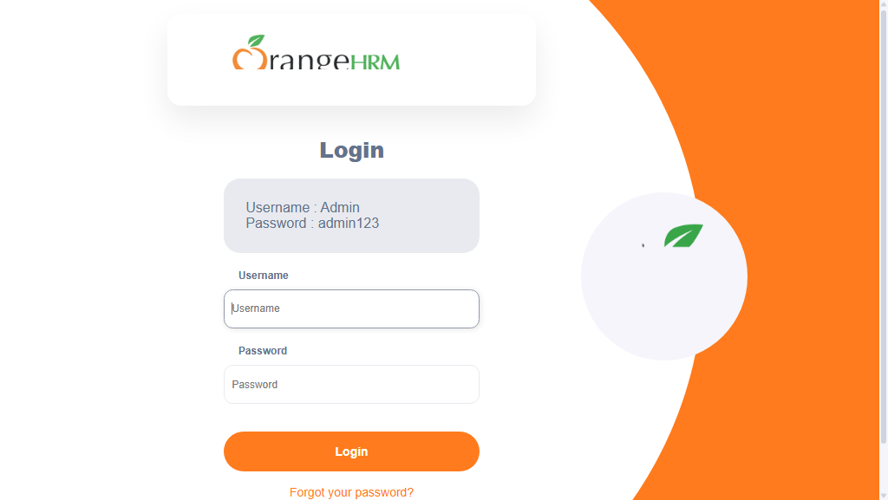

-
sampleTest1_user1_20-11-55
8:11:55 PM / 00:00:15:920 Fail
sampleTest1_user1_20-11-55
09.19.2026 8:11:55 PM 09.19.2026 8:12:11 PM 00:00:15:920 · #test-id=3Status Timestamp Details Skip 8:12:10 PM Test Skipped Fail 8:12:10 PM Info 8:12:11 PM 📂 Logs: Info 8:12:11 PM 📄 sampleTest1_user1_20-11-55.log -
sampleTest3_user1_20-11-55
8:11:55 PM / 00:00:14:886 Fail
sampleTest3_user1_20-11-55
09.19.2026 8:11:55 PM 09.19.2026 8:12:10 PM 00:00:14:886 · #test-id=4Status Timestamp Details Skip 8:12:10 PM Test Skipped Fail 8:12:10 PM -
sampleTest2_user1_20-11-55
8:11:55 PM / 00:00:14:886 Fail
sampleTest2_user1_20-11-55
09.19.2026 8:11:55 PM 09.19.2026 8:12:10 PM 00:00:14:886 · #test-id=1Status Timestamp Details Skip 8:12:10 PM Test Skipped Fail 8:12:10 PM -
sampleTest_user1_20-11-55
8:11:55 PM / 00:00:15:920 Fail
sampleTest_user1_20-11-55
09.19.2026 8:11:55 PM 09.19.2026 8:12:11 PM 00:00:15:920 · #test-id=2Status Timestamp Details Skip 8:12:10 PM Test Skipped Fail 8:12:10 PM Info 8:12:11 PM 📂 Logs: Info 8:12:11 PM 📄 sampleTest_user1_20-11-55.log -
sampleTest3_user1_20-12-13
8:12:13 PM / 00:00:29:398 Fail
sampleTest3_user1_20-12-13
09.19.2026 8:12:13 PM 09.19.2026 8:12:43 PM 00:00:29:398 · #test-id=5Status Timestamp Details Skip 8:12:43 PM Test Skipped Fail 8:12:43 PM -
sampleTest2_user1_20-12-14
8:12:14 PM / 00:00:29:102 Fail
sampleTest2_user1_20-12-14
09.19.2026 8:12:14 PM 09.19.2026 8:12:43 PM 00:00:29:102 · #test-id=6Status Timestamp Details Skip 8:12:43 PM Test Skipped Fail 8:12:43 PM -
sampleTest_user1_20-12-14
8:12:14 PM / 00:00:29:098 Fail
sampleTest_user1_20-12-14
09.19.2026 8:12:14 PM 09.19.2026 8:12:43 PM 00:00:29:098 · #test-id=7Status Timestamp Details Skip 8:12:43 PM Test Skipped Fail 8:12:43 PM Info 8:12:43 PM 📂 Logs: Info 8:12:43 PM 📄 sampleTest_user1_20-12-14.log -
sampleTest1_user1_20-12-20
8:12:20 PM / 00:00:22:724 Fail
sampleTest1_user1_20-12-20
09.19.2026 8:12:20 PM 09.19.2026 8:12:43 PM 00:00:22:724 · #test-id=8Status Timestamp Details Skip 8:12:43 PM Test Skipped Fail 8:12:43 PM Info 8:12:43 PM 📂 Logs: Info 8:12:43 PM 📄 sampleTest1_user1_20-12-20.log -
sampleTest3_user1_20-12-54
8:12:54 PM / 00:00:27:937 Fail
sampleTest3_user1_20-12-54
09.19.2026 8:12:54 PM 09.19.2026 8:13:22 PM 00:00:27:937 · #test-id=9Status Timestamp Details Fail 8:13:22 PM -
sampleTest2_user1_20-12-56
8:12:56 PM / 00:00:25:820 Fail
sampleTest2_user1_20-12-56
09.19.2026 8:12:56 PM 09.19.2026 8:13:22 PM 00:00:25:820 · #test-id=10Status Timestamp Details Fail 8:13:22 PM -
sampleTest1_user1_20-12-59
8:12:59 PM / 00:00:23:591 Fail
sampleTest1_user1_20-12-59
09.19.2026 8:12:59 PM 09.19.2026 8:13:22 PM 00:00:23:591 · #test-id=11Status Timestamp Details Fail 8:13:22 PM Info 8:13:22 PM 📂 Logs: Info 8:13:22 PM 📄 sampleTest1_user1_20-12-59.log -
sampleTest_user1_20-12-59
8:12:59 PM / 00:00:23:163 Fail
sampleTest_user1_20-12-59
09.19.2026 8:12:59 PM 09.19.2026 8:13:22 PM 00:00:23:163 · #test-id=12Status Timestamp Details Fail 8:13:22 PM Info 8:13:22 PM 📂 Logs: Info 8:13:22 PM 📄 sampleTest_user1_20-12-59.log -
sampleTest1_user2_20-13-26
8:13:26 PM / 00:00:19:442 Fail
sampleTest1_user2_20-13-26
09.19.2026 8:13:26 PM 09.19.2026 8:13:45 PM 00:00:19:442 · #test-id=13Status Timestamp Details Skip 8:13:45 PM Test Skipped Fail 8:13:45 PM Info 8:13:45 PM 📂 Logs: Info 8:13:45 PM 📄 sampleTest1_user2_20-13-26.log -
sampleTest_user2_20-13-26
8:13:26 PM / 00:00:18:868 Fail
sampleTest_user2_20-13-26
09.19.2026 8:13:26 PM 09.19.2026 8:13:45 PM 00:00:18:868 · #test-id=14Status Timestamp Details Skip 8:13:45 PM Test Skipped Fail 8:13:45 PM Info 8:13:45 PM 📂 Logs: Info 8:13:45 PM 📄 sampleTest_user2_20-13-26.log -
sampleTest3_user2_20-13-26
8:13:27 PM / 00:00:18:757 Fail
sampleTest3_user2_20-13-26
09.19.2026 8:13:27 PM 09.19.2026 8:13:45 PM 00:00:18:757 · #test-id=15Status Timestamp Details Skip 8:13:45 PM Test Skipped Fail 8:13:45 PM -
sampleTest2_user2_20-13-29
8:13:29 PM / 00:00:16:622 Fail
sampleTest2_user2_20-13-29
09.19.2026 8:13:29 PM 09.19.2026 8:13:45 PM 00:00:16:622 · #test-id=16Status Timestamp Details Skip 8:13:45 PM Test Skipped Fail 8:13:45 PM -
sampleTest2_user2_20-13-48
8:13:48 PM / 00:00:19:590 Fail
sampleTest2_user2_20-13-48
09.19.2026 8:13:48 PM 09.19.2026 8:14:08 PM 00:00:19:590 · #test-id=17Status Timestamp Details Skip 8:14:08 PM Test Skipped Fail 8:14:08 PM -
sampleTest1_user2_20-13-49
8:13:49 PM / 00:00:19:127 Fail
sampleTest1_user2_20-13-49
09.19.2026 8:13:49 PM 09.19.2026 8:14:08 PM 00:00:19:127 · #test-id=18Status Timestamp Details Skip 8:14:08 PM Test Skipped Fail 8:14:08 PM Info 8:14:08 PM 📂 Logs: Info 8:14:08 PM 📄 sampleTest1_user2_20-13-49.log -
sampleTest_user2_20-13-49
8:13:49 PM / 00:00:19:673 Fail
sampleTest_user2_20-13-49
09.19.2026 8:13:49 PM 09.19.2026 8:14:08 PM 00:00:19:673 · #test-id=19Status Timestamp Details Skip 8:14:08 PM Test Skipped Fail 8:14:08 PM Info 8:14:08 PM 📂 Logs: Info 8:14:08 PM 📄 sampleTest_user2_20-13-49.log -
sampleTest3_user2_20-13-49
8:13:49 PM / 00:00:18:642 Fail
sampleTest3_user2_20-13-49
09.19.2026 8:13:49 PM 09.19.2026 8:14:08 PM 00:00:18:642 · #test-id=20Status Timestamp Details Skip 8:14:08 PM Test Skipped Fail 8:14:08 PM -
sampleTest3_user2_20-14-10
8:14:10 PM / 00:00:20:512 Fail
sampleTest3_user2_20-14-10
09.19.2026 8:14:10 PM 09.19.2026 8:14:30 PM 00:00:20:512 · #test-id=21Status Timestamp Details Fail 8:14:30 PM -
sampleTest1_user2_20-14-10
8:14:10 PM / 00:00:19:806 Fail
sampleTest1_user2_20-14-10
09.19.2026 8:14:10 PM 09.19.2026 8:14:30 PM 00:00:19:806 · #test-id=22Status Timestamp Details Fail 8:14:30 PM Info 8:14:30 PM 📂 Logs: Info 8:14:30 PM 📄 sampleTest1_user2_20-14-10.log -
sampleTest2_user2_20-14-11
8:14:11 PM / 00:00:19:201 Fail
sampleTest2_user2_20-14-11
09.19.2026 8:14:11 PM 09.19.2026 8:14:30 PM 00:00:19:201 · #test-id=23Status Timestamp Details Fail 8:14:30 PM -
sampleTest_user2_20-14-14
8:14:14 PM / 00:00:16:311 Fail
sampleTest_user2_20-14-14
09.19.2026 8:14:14 PM 09.19.2026 8:14:30 PM 00:00:16:311 · #test-id=24Status Timestamp Details Fail 8:14:30 PM Info 8:14:30 PM 📂 Logs: Info 8:14:30 PM 📄 sampleTest_user2_20-14-14.log -
sampleTest4_user1_20-14-31
8:14:31 PM / 00:00:24:035 Fail
sampleTest4_user1_20-14-31
09.19.2026 8:14:31 PM 09.19.2026 8:14:56 PM 00:00:24:035 · #test-id=25Status Timestamp Details Skip 8:14:56 PM Test Skipped Fail 8:14:56 PM -
sampleTest5_user1_20-14-34
8:14:34 PM / 00:00:21:559 Fail
sampleTest5_user1_20-14-34
09.19.2026 8:14:34 PM 09.19.2026 8:14:56 PM 00:00:21:559 · #test-id=26Status Timestamp Details Skip 8:14:56 PM Test Skipped Fail 8:14:56 PM -
verifyLoginTest1_user1_20-14-34
8:14:34 PM / 00:00:21:591 Fail
verifyLoginTest1_user1_20-14-34
09.19.2026 8:14:34 PM 09.19.2026 8:14:56 PM 00:00:21:591 · #test-id=27Status Timestamp Details Skip 8:14:56 PM Test Skipped Fail 8:14:56 PM Info 8:14:56 PM 📸 Screenshots: Info 8:14:56 PM 
-
verifyLoginTest_{COL1=ONE}_20-14-39
8:14:39 PM / 00:00:16:881 Fail
verifyLoginTest_{COL1=ONE}_20-14-39
09.19.2026 8:14:39 PM 09.19.2026 8:14:56 PM 00:00:16:881 · #test-id=28Status Timestamp Details Skip 8:14:56 PM Test Skipped Fail 8:14:56 PM Info 8:14:56 PM 📂 Logs: Info 8:14:56 PM 📄 verifyLoginTest_{COL1=ONE}_20-14-39.log Info 8:14:56 PM 📸 Screenshots: Info 8:14:56 PM 
-
sampleTest4_user1_20-14-58
8:14:58 PM / 00:00:19:562 Fail
sampleTest4_user1_20-14-58
09.19.2026 8:14:58 PM 09.19.2026 8:15:17 PM 00:00:19:562 · #test-id=29Status Timestamp Details Skip 8:15:17 PM Test Skipped Fail 8:15:17 PM -
verifyLoginTest1_user1_20-15-00
8:15:00 PM / 00:00:18:809 Fail
verifyLoginTest1_user1_20-15-00
09.19.2026 8:15:00 PM 09.19.2026 8:15:18 PM 00:00:18:809 · #test-id=30Status Timestamp Details Skip 8:15:18 PM Test Skipped Fail 8:15:18 PM Info 8:15:18 PM 📸 Screenshots: Info 8:15:18 PM 
-
verifyLoginTest_{COL1=ONE}_20-15-00
8:15:00 PM / 00:00:19:039 Fail
verifyLoginTest_{COL1=ONE}_20-15-00
09.19.2026 8:15:00 PM 09.19.2026 8:15:19 PM 00:00:19:039 · #test-id=31Status Timestamp Details Skip 8:15:19 PM Test Skipped Fail 8:15:19 PM Info 8:15:19 PM 📂 Logs: Info 8:15:19 PM 📄 verifyLoginTest_{COL1=ONE}_20-15-00.log Info 8:15:19 PM 📸 Screenshots: Info 8:15:19 PM 
-
sampleTest5_user1_20-15-00
8:15:00 PM / 00:00:17:003 Fail
sampleTest5_user1_20-15-00
09.19.2026 8:15:00 PM 09.19.2026 8:15:17 PM 00:00:17:003 · #test-id=32Status Timestamp Details Skip 8:15:17 PM Test Skipped Fail 8:15:17 PM -
sampleTest4_user1_20-15-19
8:15:19 PM / 00:00:21:955 Fail
sampleTest4_user1_20-15-19
09.19.2026 8:15:19 PM 09.19.2026 8:15:41 PM 00:00:21:955 · #test-id=33Status Timestamp Details Fail 8:15:41 PM -
sampleTest5_user1_20-15-19
8:15:19 PM / 00:00:24:796 Fail
sampleTest5_user1_20-15-19
09.19.2026 8:15:19 PM 09.19.2026 8:15:44 PM 00:00:24:796 · #test-id=34Status Timestamp Details Fail 8:15:44 PM -
verifyLoginTest1_user1_20-15-22
8:15:22 PM / 00:00:22:084 Fail
verifyLoginTest1_user1_20-15-22
09.19.2026 8:15:22 PM 09.19.2026 8:15:44 PM 00:00:22:084 · #test-id=35Status Timestamp Details Fail 8:15:44 PM Info 8:15:44 PM 📸 Screenshots: Info 8:15:44 PM 
-
verifyLoginTest_{COL1=ONE}_20-15-25
8:15:25 PM / 00:00:19:779 Fail
verifyLoginTest_{COL1=ONE}_20-15-25
09.19.2026 8:15:25 PM 09.19.2026 8:15:44 PM 00:00:19:779 · #test-id=36Status Timestamp Details Fail 8:15:44 PM Info 8:15:44 PM 📂 Logs: Info 8:15:44 PM 📄 verifyLoginTest_{COL1=ONE}_20-15-25.log Info 8:15:44 PM 📸 Screenshots: Info 8:15:44 PM 
-
sampleTest4_user2_20-15-45
8:15:45 PM / 00:00:28:452 Fail
sampleTest4_user2_20-15-45
09.19.2026 8:15:45 PM 09.19.2026 8:16:13 PM 00:00:28:452 · #test-id=37Status Timestamp Details Skip 8:16:13 PM Test Skipped Fail 8:16:13 PM -
sampleTest5_user2_20-15-50
8:15:50 PM / 00:00:23:181 Fail
sampleTest5_user2_20-15-50
09.19.2026 8:15:50 PM 09.19.2026 8:16:13 PM 00:00:23:181 · #test-id=38Status Timestamp Details Skip 8:16:13 PM Test Skipped Fail 8:16:13 PM -
verifyLoginTest1_user2_20-15-52
8:15:52 PM / 00:00:21:453 Fail
verifyLoginTest1_user2_20-15-52
09.19.2026 8:15:52 PM 09.19.2026 8:16:13 PM 00:00:21:453 · #test-id=39Status Timestamp Details Skip 8:16:13 PM Test Skipped Fail 8:16:13 PM Info 8:16:13 PM 📸 Screenshots: Info 8:16:13 PM 
-
verifyLoginTest_{COL1=ONEONE}_20-15-55
8:15:55 PM / 00:00:18:253 Fail
verifyLoginTest_{COL1=ONEONE}_20-15-55
09.19.2026 8:15:55 PM 09.19.2026 8:16:13 PM 00:00:18:253 · #test-id=40Status Timestamp Details Skip 8:16:13 PM Test Skipped Fail 8:16:13 PM Info 8:16:13 PM 📂 Logs: Info 8:16:13 PM 📄 verifyLoginTest_{COL1=ONEONE}_20-15-55.log Info 8:16:13 PM 📸 Screenshots: Info 8:16:13 PM 
-
verifyLoginTest1_user2_20-16-17
8:16:17 PM / 00:00:25:810 Fail
verifyLoginTest1_user2_20-16-17
09.19.2026 8:16:17 PM 09.19.2026 8:16:43 PM 00:00:25:810 · #test-id=41Status Timestamp Details Skip 8:16:43 PM Test Skipped Fail 8:16:43 PM Info 8:16:43 PM 📸 Screenshots: Info 8:16:43 PM 
-
sampleTest5_user2_20-16-17
8:16:17 PM / 00:00:25:528 Fail
sampleTest5_user2_20-16-17
09.19.2026 8:16:17 PM 09.19.2026 8:16:42 PM 00:00:25:528 · #test-id=42Status Timestamp Details Skip 8:16:42 PM Test Skipped Fail 8:16:42 PM -
sampleTest4_user2_20-16-21
8:16:21 PM / 00:00:21:663 Fail
sampleTest4_user2_20-16-21
09.19.2026 8:16:21 PM 09.19.2026 8:16:42 PM 00:00:21:663 · #test-id=43Status Timestamp Details Skip 8:16:42 PM Test Skipped Fail 8:16:42 PM -
verifyLoginTest_{COL1=ONEONE}_20-16-21
8:16:21 PM / 00:00:21:377 Fail
verifyLoginTest_{COL1=ONEONE}_20-16-21
09.19.2026 8:16:21 PM 09.19.2026 8:16:43 PM 00:00:21:377 · #test-id=44Status Timestamp Details Skip 8:16:43 PM Test Skipped Fail 8:16:43 PM Info 8:16:43 PM 📂 Logs: Info 8:16:43 PM 📄 verifyLoginTest_{COL1=ONEONE}_20-16-21.log Info 8:16:43 PM 📸 Screenshots: Info 8:16:43 PM 
-
sampleTest4_user2_20-16-45
8:16:45 PM / 00:00:21:234 Fail
sampleTest4_user2_20-16-45
09.19.2026 8:16:45 PM 09.19.2026 8:17:06 PM 00:00:21:234 · #test-id=45Status Timestamp Details Fail 8:17:06 PM -
verifyLoginTest_{COL1=ONEONE}_20-16-46
8:16:46 PM / 00:00:18:483 Fail
verifyLoginTest_{COL1=ONEONE}_20-16-46
09.19.2026 8:16:46 PM 09.19.2026 8:17:04 PM 00:00:18:483 · #test-id=46Status Timestamp Details Fail 8:17:04 PM Info 8:17:04 PM 📂 Logs: Info 8:17:04 PM 📄 verifyLoginTest_{COL1=ONEONE}_20-16-46.log Info 8:17:04 PM 📸 Screenshots: Info 8:17:04 PM 
-
sampleTest5_user2_20-16-49
8:16:49 PM / 00:00:17:889 Fail
sampleTest5_user2_20-16-49
09.19.2026 8:16:49 PM 09.19.2026 8:17:07 PM 00:00:17:889 · #test-id=47Status Timestamp Details Fail 8:17:07 PM -
verifyLoginTest1_user2_20-16-51
8:16:51 PM / 00:00:16:121 Fail
verifyLoginTest1_user2_20-16-51
09.19.2026 8:16:51 PM 09.19.2026 8:17:07 PM 00:00:16:121 · #test-id=48Status Timestamp Details Fail 8:17:07 PM Info 8:17:07 PM 📸 Screenshots: Info 8:17:07 PM 
-
verifyLoginTest2_user1_20-17-07
8:17:07 PM / 00:00:14:038 Fail
verifyLoginTest2_user1_20-17-07
09.19.2026 8:17:07 PM 09.19.2026 8:17:21 PM 00:00:14:038 · #test-id=49Status Timestamp Details Skip 8:17:21 PM Test Skipped Fail 8:17:21 PM Info 8:17:21 PM 📂 Logs: Info 8:17:21 PM 📄 verifyLoginTest2_user1_20-17-07.log -
verifyLoginTest2_user1_20-17-22
8:17:22 PM / 00:00:15:046 Fail
verifyLoginTest2_user1_20-17-22
09.19.2026 8:17:22 PM 09.19.2026 8:17:37 PM 00:00:15:046 · #test-id=50Status Timestamp Details Skip 8:17:37 PM Test Skipped Fail 8:17:37 PM Info 8:17:37 PM 📂 Logs: Info 8:17:37 PM 📄 verifyLoginTest2_user1_20-17-22.log -
verifyLoginTest2_user1_20-17-38
8:17:38 PM / 00:00:12:593 Fail
verifyLoginTest2_user1_20-17-38
09.19.2026 8:17:38 PM 09.19.2026 8:17:51 PM 00:00:12:593 · #test-id=51Status Timestamp Details Fail 8:17:51 PM Info 8:17:51 PM 📂 Logs: Info 8:17:51 PM 📄 verifyLoginTest2_user1_20-17-38.log -
verifyLoginTest2_user2_20-17-56
8:17:56 PM / 00:00:13:836 Fail
verifyLoginTest2_user2_20-17-56
09.19.2026 8:17:56 PM 09.19.2026 8:18:10 PM 00:00:13:836 · #test-id=52Status Timestamp Details Skip 8:18:10 PM Test Skipped Fail 8:18:10 PM Info 8:18:10 PM 📂 Logs: Info 8:18:10 PM 📄 verifyLoginTest2_user2_20-17-56.log -
verifyLoginTest2_user2_20-18-11
8:18:11 PM / 00:00:14:247 Fail
verifyLoginTest2_user2_20-18-11
09.19.2026 8:18:11 PM 09.19.2026 8:18:25 PM 00:00:14:247 · #test-id=53Status Timestamp Details Skip 8:18:25 PM Test Skipped Fail 8:18:25 PM Info 8:18:25 PM 📂 Logs: Info 8:18:25 PM 📄 verifyLoginTest2_user2_20-18-11.log -
verifyLoginTest2_user2_20-18-26
8:18:26 PM / 00:00:13:251 Fail
verifyLoginTest2_user2_20-18-26
09.19.2026 8:18:26 PM 09.19.2026 8:18:39 PM 00:00:13:251 · #test-id=54Status Timestamp Details Fail 8:18:39 PM Info 8:18:39 PM 📂 Logs: Info 8:18:39 PM 📄 verifyLoginTest2_user2_20-18-26.log
-
org.openqa.selenium.TimeoutException
54 tests
org.openqa.selenium.TimeoutException
54 failed
Started
Sep 19, 2026 08:11:28 PM
Ended
Sep 19, 2026 08:18:41 PM
Tests Passed
0
Tests Failed
54
Tests
Log events
Timeline